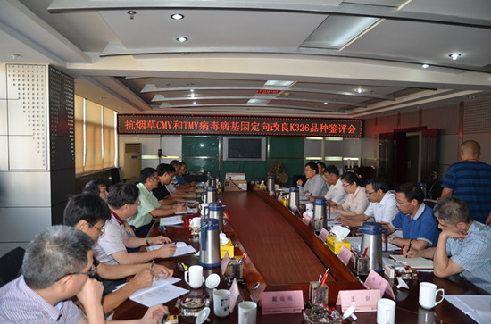

烟草所定向改良主栽品种K326的病毒病抗性取得成功
7月29日，由中国农业科学院烟草研究所完成的“抗烟草烟草普通花叶病毒(TMV)和烟草黄瓜花叶病毒(CMV)病基因定向改良K326品种”通过国家烟草专卖局科技司和中国烟叶公司组织的田间鉴评。
据悉，2016年是烟草基因组计划重大专项第二期的开端之年，经过前五年的研究，相关研究成果逐步落地。为了促使烟草基因组研究成果尽快转化为生产力，项目组分别在四川西昌和山东诸城设立南北两个试验点，开展田间鉴评。在西昌点，田间现场调查数据显示，在大田自然发病情况下，改良K326病毒病发病率为0.67%，对照K326的发病率为46.67%，改良K326对CMV、TMV抗性极显著提高。在诸城点，与对照K326相比，改良K326对CMV、TMV、 PVY均表现为高抗；改良K326田间表现整齐长势强，农艺性状与对照K326无明显差异；烟叶外观品质与对照K326相当。

专家组一致认为，K326是我国主栽烤烟品种，病毒病是该品种的重要病害，项目组选择对K326进行病毒病抗性改良，目标明确，意义重大。在实施过程中，项目组将基因定位与品种改良有机结合，将常规育种与分子育种有机结合，
其创新性育种技术体系开辟了烟草分子育种的新模式，研究成果达到了玉米、水稻等其他大作物同类研究水平，实现了烟草育种从传统的“经验育种”到“精准育种”的转变。抗烟草CMV和TMV病毒病基因定向改良K326品种，在保持K326其他性状不变的前提下，
TMV和
CMV病抗性得到显著提高，解决了烤烟主栽品种K326病毒病抗性差的关键问题，具有替代K326进行推广种植的潜力。专家组一致同意抗CMV和TMV病毒病K326品种通过田间鉴评，建议尽快开展工业验证，加快示范推广。据悉，2016年是烟草基因组计划重大专项第二期的开端之年，经过前五年的研究，相关研究成果逐步落地。为了促使烟草基因组研究成果尽快转化为生产力，项目组分别在四川西昌和山东诸城设立南北两个试验点，开展田间鉴评。在西昌点，田间现场调查数据显示，在大田自然发病情况下，改良K326病毒病发病率为0.67%，对照K326的发病率为46.67%，改良K326对CMV、TMV抗性极显著提高。在诸城点，与对照K326相比，改良K326对CMV、TMV、 PVY均表现为高抗；改良K326田间表现整齐长势强，农艺性状与对照K326无明显差异；烟叶外观品质与对照K326相当。